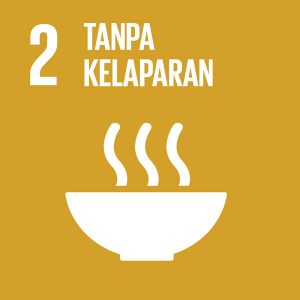
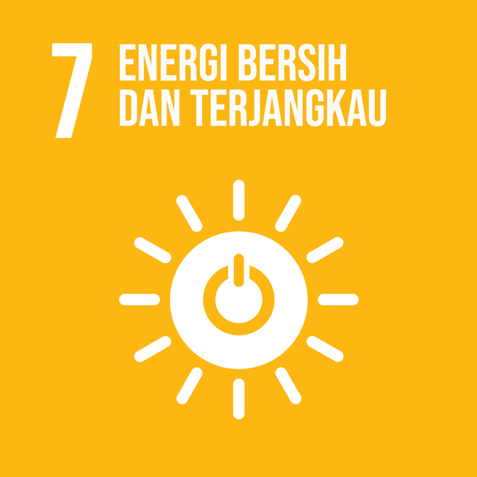
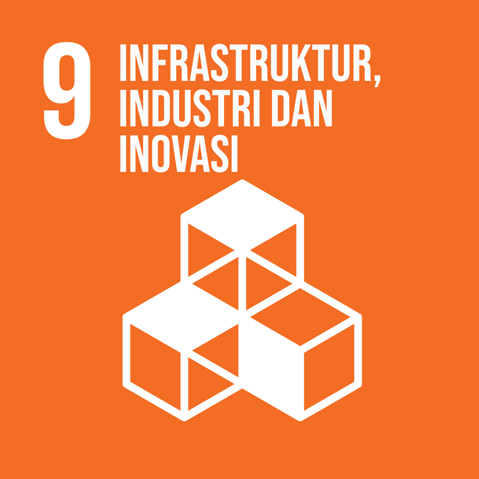
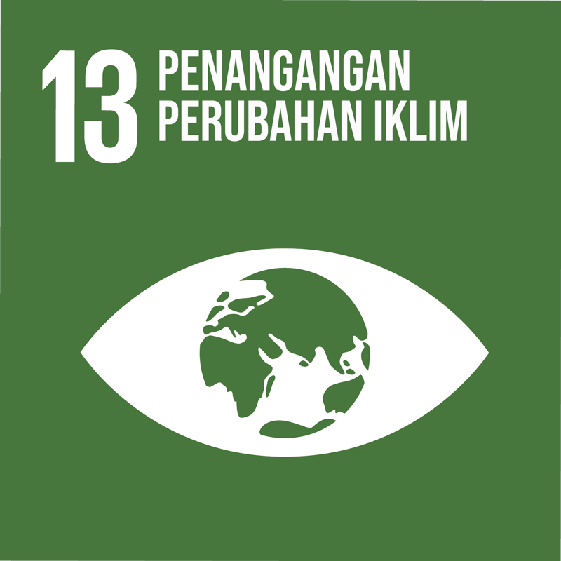
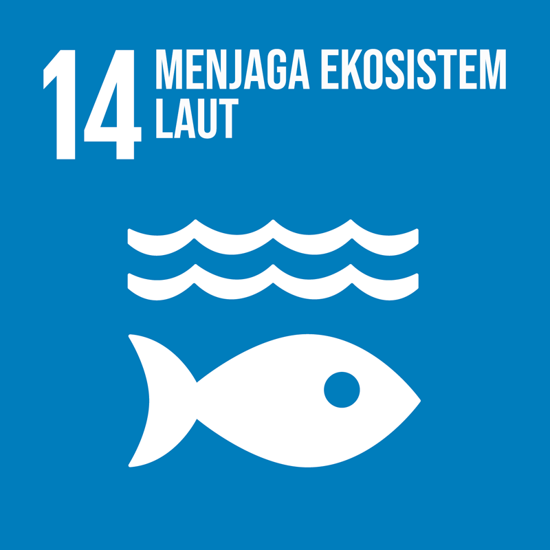
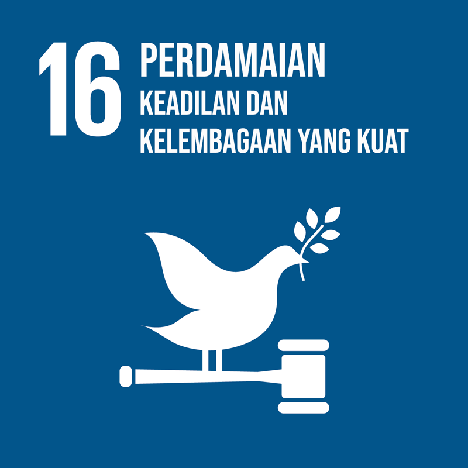
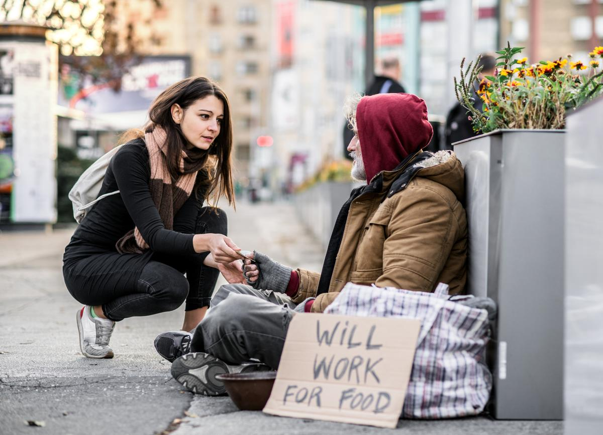

Mengatasi segala bentuk kemiskinan di semua wilayah.

Mengakhiri kelaparan, mencapai ketahanan pangan, meningkatkan kadar nutrisi, dan mendukung pertanian yang berkelanjutan.

Memastikan kehidupan yang sehat dan meningkatkan kesejahteraan di segala usia.

Memastikan pendidikan yang berkualitas yang layak dan inklusif serta mendorong kesempatan belajar seumur hidup.

Mencapai kesetaraan gender dan memberdayakan perempuan.

Menjamin akses atas air dan sanitasi layak.

Memastikan akses pada energi yang terjangkau, bisa diandalkan, berkelanjutan, dan modern untuk semua.

Pertumbuhan ekonomi inklusif, memastikan pekerjaan yang produktif dan layak bagi semua orang.

Membangun infrastruktur yang kokoh, meningkatkan industrialisasi inklusif dan berkelanjutan, serta mendorong adanya inovasi.

Mengurangi kesenjangan dalam dan luar negara dengan promosi inklusivitas. Memperdaya kelompok yang mengalami ketidaksetaraan dalam pendapatan.

Perencanaan kota dan menjamin akses terhadap transportasi umum. Kota/pemukiman bersifat inklusif, aman, dan melindungi warisan budaya.

Pola konsumsi dan produksi berkelanjutan. Pentingnya efisiensi sumber daya, pengelolaan limbah, dan pengembangan produk ramah lingkungan.

Mengatasi/beradaptasi perubahan iklim, mengurangi emisi gas rumah kaca, dan mitigasi bencana alam.

Perlindungan/pemanfaatan berkelanjutan sumber daya laut, mengurangi limbah plastik, dan mengendali praktik perikanan yang merugikan.

Melindungi, memulihkan, dan meningkatkan ekosistem bumi secara berkelanjutan seperti mengelola hutan, menjaga biodiversitas, dan keanekaragaman.

Masyarakat yang damai, keadilan rata, dan lembaga yang efektif, akuntabel, dan inklusif di semua tingkatan.

Penguatan kemitraan global untuk pembangunan berkelanjutan dengan kolaborasi untuk pengembangan kapasitas, transfer teknologi, dan keuangan.
Mereka yang miskin dan kekurangan hidup kesusahan untuk memenuhi kebutuhan keseharian mereka. Mereka setiap hari tentunya tidak memiliki porsi makan yang cukup, pakaian yang terbatas, bahkan juga ada yang tidak memiliki tempat tinggal seperti kita semua yang setidaknya cukup untuk memenuhi kebutuhan pokok. Faktor-faktor ini disebabkan karena perekonomian kini yang sulit sehingga mendorong angka kemiskinan yang tinggi. Bantuan kecil untuk mereka yang miskin dapat berarti besar bagi mereka dan perubahan sosial. Apa yang dapat kamu lakukan untuk membantu mereka? Mulailah dari hal kecil seperti menyisihkan sedikit dari uang sakumu untuk membagikannya ke mereka yang miskin. Tentunya menurut kita, uang tersebut tidak seberapa, namun bagi mereka, uang itu ibaratnya seperti harta karun yang sulit ditemukan. Selain itu, kita juga dapat melakukan sedekah berupa makanan atau baju yang tidak digunakan lagi. Tindakan ini dapat menolong mereka untuk meringankan biaya pengeluaran untuk kebutuhan pokok sehari-hari. Segala bentuk kecil tindakanmu, dapat memberi mereka harapan dalam perekonomian.
